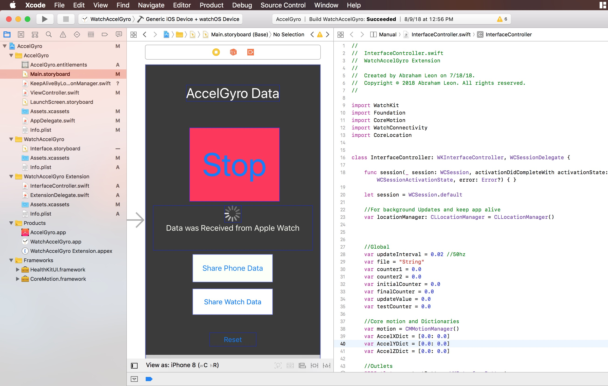
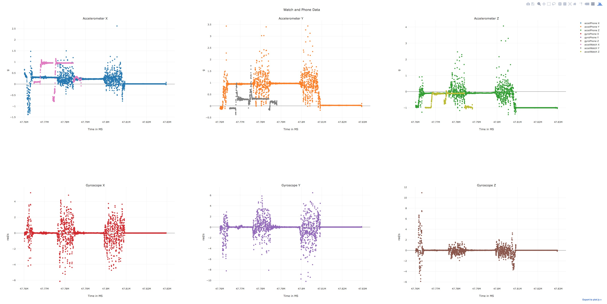
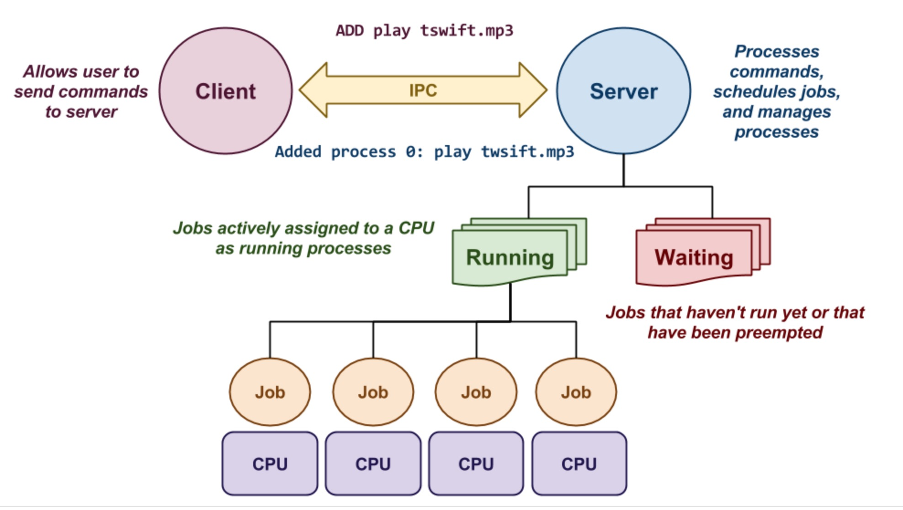
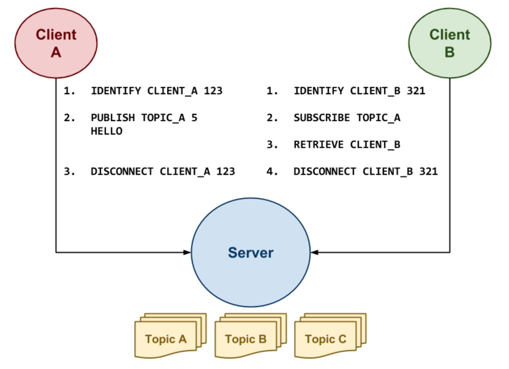
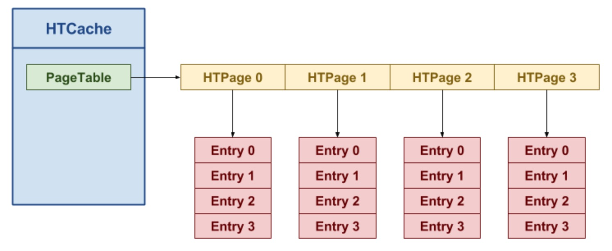
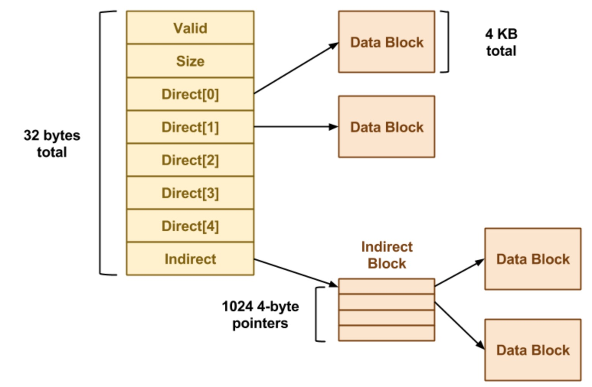
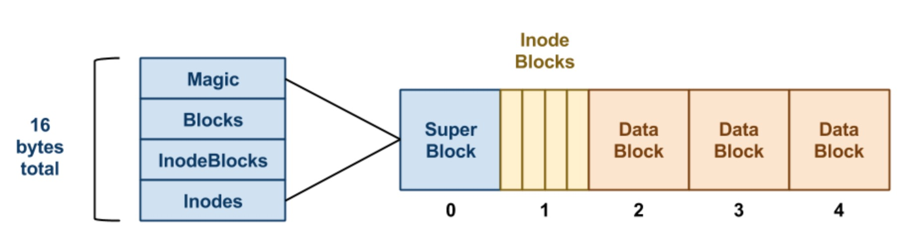

Abraham Leon
I am currently an undergraduate student majoring in Computer Science at the University of Notre Dame. I was born in El Salvador and now reside in Marietta, Georgia. I will be graduating in May of 2019. I enjoy staying active whenever I have some time outside of school. I also enjoy playing my guitar and learning to play new music. I enjoy keeping up with the latest and best tech as I've always been a big admirer of technology and hope to be the one making great strides for it in the future.
Employment
Research
Worked with Professor Aaron Striegel to come up with a way to see if an individual has shot a firegun by using the technologies in wearables and smartphones.
Student Assistant
Assisted the Office of Student Affairs with everyday tasks. Helped to plan and direct events for the University of Notre Dame.
Summer Resident Assistant
Led and organized events for undergraduate residents living on campus. Facilitated first year students’ transition from secondary school to university both socially and academically.
Labor
Installed hardwood, laminate, and engineer flooring. Assisted in demolitions and various housing construction projects.
Intern
Gained experience managing customer database, building a customer network and scraping the web for useful data.
Education
University of Notre Dame
GPA: 3.03
Major GPA: 3.13
Marietta High School
GPA: 4.52
Skills
- C
- C++
- Java
- JavaScript
- Python
- Swift
- Xcode
- Unix/Bash
- ARM
- Scheme
- X86
- HTML and CSS
- SQL
- jQuery
- MAYA 2018 (animation)
- Adobe After Effects (video editing)
- Sony Vegas (video editing)
- Fluent in Spanish, Proficient in French
Projects
Throughout my years at Notre Dame, I've had the privilege to participate in many Engineering and Computer Science Projects, both in teams and individually. Here are a few of them:
I worked under Professor Aaron Striegel to research whether we could use current technology in smartphones and wearables to accurately tell if a firearm has gone off. This could be used as an alternative to GSR (gunshot residue) or acoustic measures to see if a firearm has been shot. I learned to use Xcode and code in Swift in order to code and iOS and watchOS app for my iPhone and Apple Watch. This app would collect the data of the accelerometer and gyroscope of the devices, turn it into a csv file and have the ability to export this file. From here, I was able to manipulate this data using several python scripts. These scripts would plot the data received an allow me to isolate events from this data. Once we have the data from a desired event, we can use machine learning in order to see what gunfire looks like based on the acceleration in three dimensions. All data was recorded at 50hz. If you want more information on this project, please feel free to email me.
 
As a team, we created a file monitoring application called rorschach, which scans a root directory for any changes to files underneath this folder and executes user-specified actions on the files based on pattern matching rules. We did this in C++ by using several data structures to keep track of the modification times, actions being performed on a file etc. Through this project, we were introduced to signals, environmental variables and to the structure of a file system.
As a team, we built a multi-core process queue, whose purpose is to receive a series of jobs and then schedule them to run on multiple CPU cores as separate processes. This project introduced us to client server protocols and communications as well as the use of scheduling for jobs (FIFO, Round Robin, Multi-Level Feedback Queue). For this project, we decided to use unix domain sockets as they enable two way communication between our client and server. The entire client and server were coded in C++. Once it was all coded, we benchmarked each of the different scheduling policies to see which ones performed better with different types of tasks. This was one of the more code intensive project that I've been a part of.

In this group project, we created an event driven publish subscribe library later to be used in a real time messaging application. This was all created in C++. The first target was to create a library that utilizes POSIX threads and concurrent data structures to implement a client. The server was provided to us. After the API was done, we implemented a simple messaging app using this API. It consisted of a client subscribing to a TOPIC, which would be the groupchat name, and sending and recieving messages back and forth to other clients subscribed to this TOPIC.

Built and implementation of the language C commands malloc and free, which allocate and free memory from the heap. To do this, we learned how memory management is handled by the OS. We learned about splitting and coalescing blcoks, implementation of heap management strategies including Next Fit, Best Fit and Worst Fit. Once these strategies had been implemented, we benchmarked the different startegies by creating different scripts in Python. We learned which strategies worked best for reusing free blocks, requiring the least amount of space, allowing for the most splits and so on.

Coded a simplified implementation of memcached which is in-memory key-value store that is used for quick access to frequently used computations (cache). In teams of 3, we used a C++ thread library to create a cache that supports concurrent access. We learned about the possible threats of concurrency and how to get around them using solutions such as semaphores and locks. Further, we learned about Page Tables and how they work. We implemented four eviction policies including FIFO, Random, LRU, and Clock for Page Entries.

In this team project, we created a version of the Unix File System. We furthered learned about Blocks, SuperBlocks, Inodes etc. We learned how a file system handles signals and the structure of a Simple FS.
 
One of my biggest passions through my childhood was content creation, more specifically video and 3d modeling. During my junior year, I got to mess around with 3D animations using the MAYA 2018 software. These were a few of my creations: